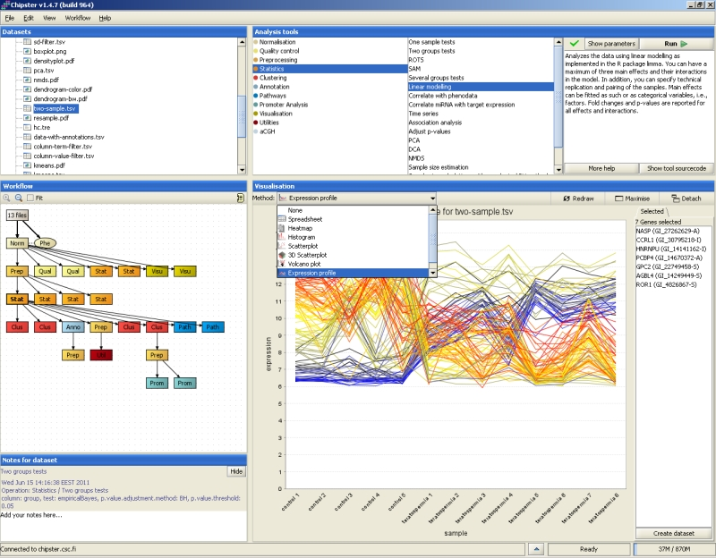
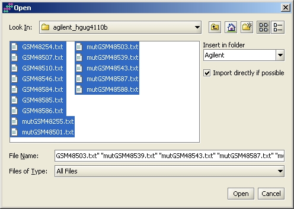
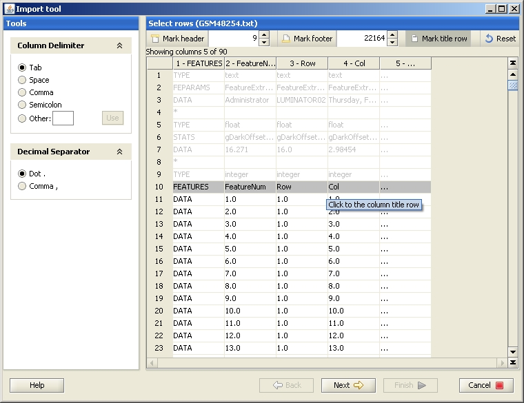
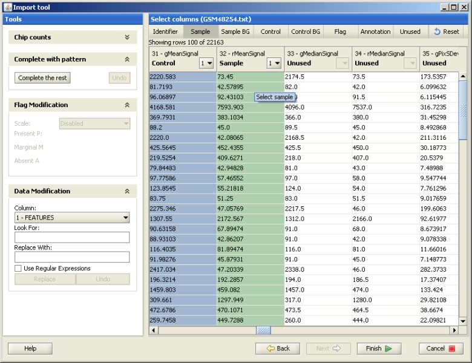
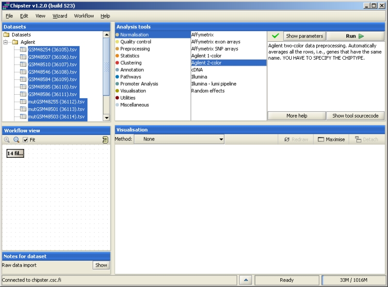
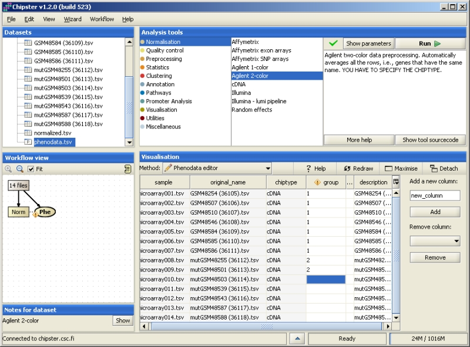
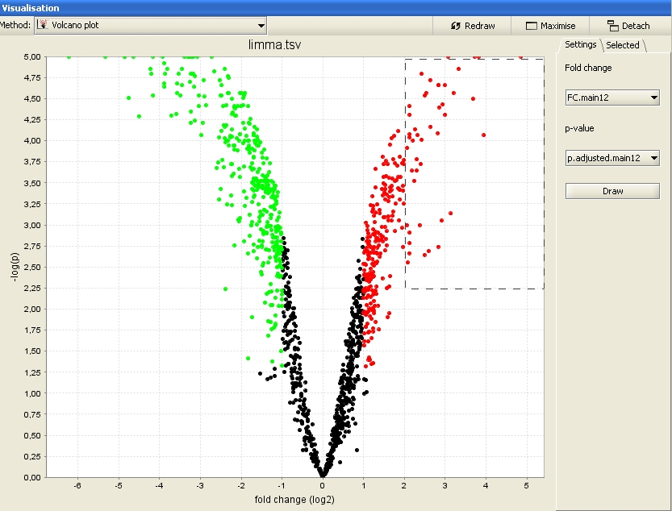

Chipster is a versatile data analysis platform with interactive visualizations and workflows. Chipster v1.4 has a comprehensive collection of analysis tools for microarray (expression, aCGH, miRNA, methylation and SNP) and proteomics data, and Chipster v2 beta has tools also for next generation sequencing data. Most of the analysis tools have been implemented in R.
Chipster is a client-server system written in Java. The client program runs on user's own computer and contains the functionality for importing and exporting files, visualising results, and keeping track of the analysis. All the actual analyses are performed on remote computing servers that contain all the required analysis software, such as R/Bioconductor.
The left part of the user interface consists of Datasets, Workflow view and Notes. The Datasets panel shows a typical folder view of the data, while Workflow view shows the relationships of the datasets and allows you to save analysis workflows for later use. The Notes panel allows you to view the tool and parameter settings used to generate the selected dataset, and to add your own comments. The right-hand side of the user interface consists of analysis tools grouped into categories, and the Visualization panel. In addition, some functionality can be found from the top menus.
The supported file types are Affymetrix CEL-files, Illumina GenomeStudio files, and tab-delimited text files. CEL and GenomeStudio files are automatically recognized and imported, while other files (Agilent, cDNA, generic data matrix) need to be imported using the Import tool. Import for various data types is described in separate documents: Affymetrix, Agilent 2-color, Agilent 1-color, cDNA, Illumina, Normalized data.
Data import is initiated by selecting "Import files" from the File menu. You can select several files by keeping Ctrl or Shift key pressed. By default your data will appear in a folder called "My experiment", but you can change this by typing a different name in the field "Insert in folder".
After selecting the files, the Import files -window comes up. Typically you don't need to change anything, since the column Action lists all files as "Use import tool". This means that you need to describe the datafile type to the system once, and it loads all other similar files in by using the same template. To get to define the file, click on OK. The possible actions are:
The Import tool opens. Mark the row containing the column names by selecting the button "Mark title row" and clicking on the row. If your data has headers or footers, remove them by clicking on the "Mark header" or "Mark footer" button and painting the lines that should be excluded.
The data file should be described to Chipster by labeling the different columns with their meanings using the buttons "Identifier", "Sample" etc. Click on the column type button, and then in the data of the column you want to label. The columns you need to select for different data types are described in the Import tool manual. After labeling all the required fields, press "Finish" to start loading the data files to Chipster.
In order to run an analysis tool, you need to select the data first, either in the Datasets or Workflow view. Then select the analysis tool category and the actual tool. If the analysis is suitable for the selected dataset, a green tick mark is displayed. To run the analysis with the default values, simply click "Run". To change the parameters, click on the button "Show parameters". Clicking on "More help" opens the manual page of the selected tool, and clicking on "Show tool source code" allows you to view the R code of the tool.
When you submit an analysis job, the blue bar on the bottom of the screen starts moving indicating that there are running jobs. You can have several jobs running at the same time. Once the analysis is ready, the Datasets and Workflow views are updated to show the newly generated data files. In order to check the status of your job, open a Task manager window by clicking on the little arrow next to the moving blue bar. Task manager lists information about all the analysis tools that you have run during the current session. The green correct mark means a successfully completed analysis, a red cross means a failed analysis, and an arrow means a currently running analysis. Mousing over the job names shows the execution time and the parameters used. Analyses can be cancelled by pressing "cancel" in the "Actions" column.
One of the first steps after data import is normalization. Data normalization is described in detail for Affymetrix, Agilent 2-color, Agilent 1-color, cDNA and Illumina.
After data import and normalization, the experimental setup is described using the Phenodata editor. Normalization generates a phenodata file (Phe) containing the names of the data files and chip type. In order to to analyze the data, you need to fill in the relevant experimental information such as experimental groups. To open the Phenodata editor, double click on the phenodata file in the Workflow view. The group column is used for running the statistical analyses, and you should use it for describing the principal variable of interest. For example, if you have samples from cancer patients and healthy controls, these experimental groups can be coded, e.g., with 1 (controls) and 2 (patients). You can only use numerical values in the group column. Several groups can be coded with a running number, and a time series either with a running number or the time of the sampling. Once you've filled in the column group, the yellow exclamation mark disappears. This indicates that you're now able to run statistical analysis. You can add or remove columns from the phenodata simply by typing in the name of the new column and clicking "Add". Rows of the phenodata can be sorted by clicking on the title bar above the column. This does not affect the order of the samples in the data, but facilitates checking and proof-reading the phenodata.
There are two types of visualizations in Chipster: Static image files (.png or .pdf) generated by the R/Bioconductor tools, and interactive visualizations generated by the Chipster client program. The latter are available in the drop-down menu of the Visualization panel. Only the options applicable for the currently selected dataset are displayed in the menu. You can select data points in the interactive visualizations and create gene list and annotation tables based on these selections. Right-clicking over an interactive visualization invokes a menu, where one can adjust the plot properties (title, axes, fonts, colors) and zoom, print or save the image. You can view large images by clicking on "Maximize", and view several visualizations simultaneously by clicking on "Detach".
In order to continue with your analysis session later on, you have to save it by selecting "File->Save session". All the datasets and their relationships are saved as a session, which is packed into a single compressed file. Session files have an extension .cs (for Chipster Session). You can continue the session also on another computer by copying the session file there, or you can share it with your colleague. Session can be loaded by selecting "File->Open session". By default the current data is cleared before another session is loaded, but you can select "Add to current session" from the session file dialog to combine the existing session with the one from the session file.
Workflow is a description of the analysis steps that you've run to the currently selected dataset. If you've built a workflow you would like to reuse or share with a colleague, you should save it by selecting "Workflow->Save" starting from selected. You can save the workflow file anywhere you like and change its name, but the ending has to be .bsh. If you would like to apply the same workflow to another dataset, import the data and normalize it, and select "Workflow->Open" and "Run", or "Workflow->Run recent" (if you saved the workflow recently).
Exporting data is simple. Just select a dataset or a folder, and go to File-menu. Select "Export dataset or folder", and browse to where you want to export the files.